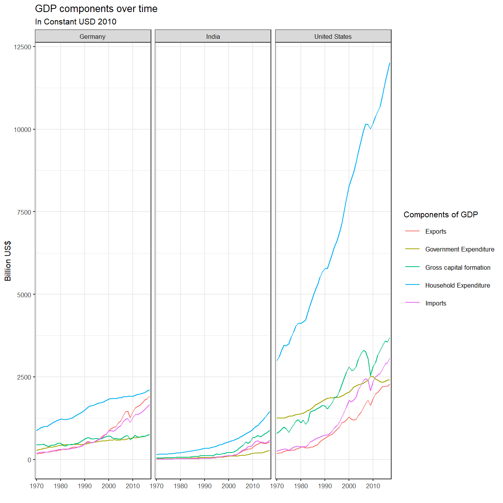
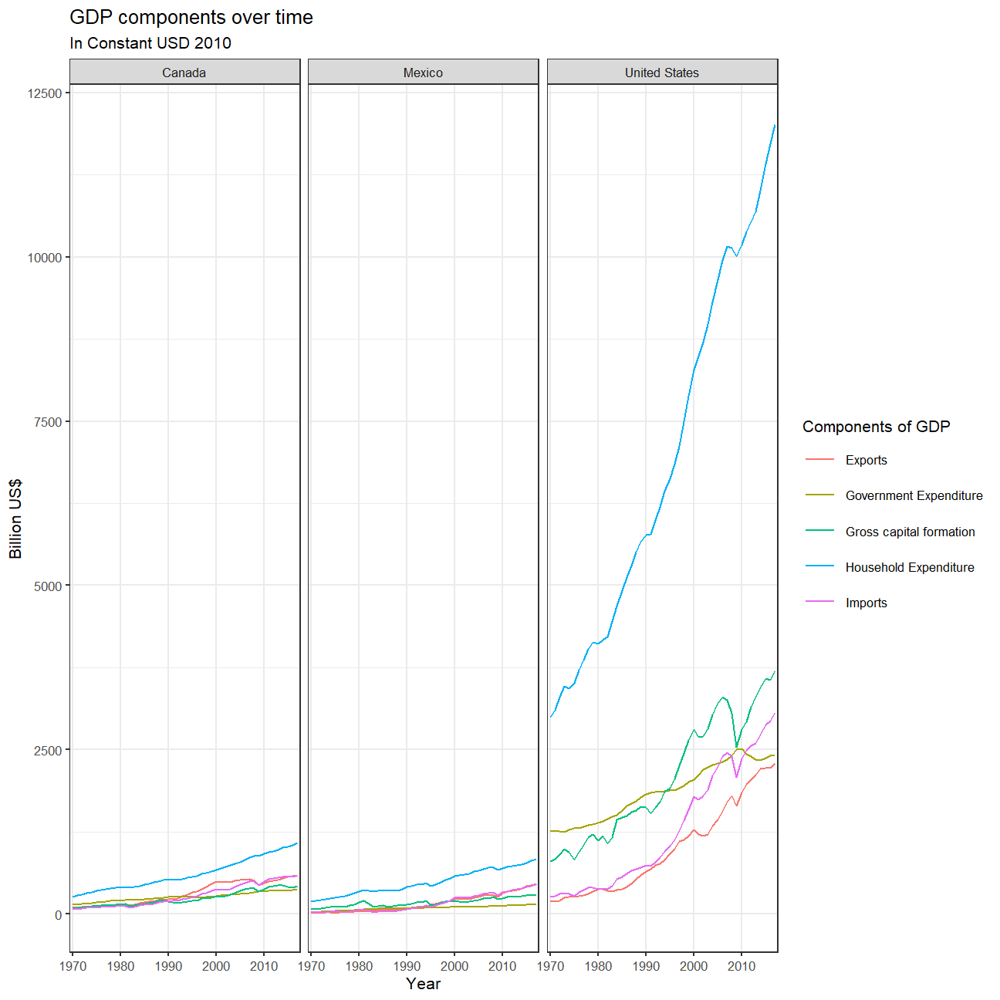

How has GDP among different countries changed over time? I hope to answer this question through the following analysis done on R, including a breakdown on the trends of a couple specific countries. While data analysis is always important, I will try to understand what the identified trends are and what has caused them.
The main components of gross domestic product, GDP are personal consumption (C), business investment (I), government spending (G) and net exports (exports - imports).We will look at how GDP and its components have changed over time, and compare different countries and how much each component contributes to that country’s GDP.
knitr::opts_chunk$set(
echo = FALSE,
fig.align = "center",
fig.height = 6.75,
fig.width = 6.75,
message = FALSE,
warning = FALSE,
size = "small",
tidy = FALSE
)
# slightly smaller font for code
options(digits = 3)
# default figure size
knitr::opts_chunk$set(
fig.width=6.75,
fig.height=6.75,
fig.align = "center"
)
library(tidyverse) ## -- Attaching packages --------------------------------------- tidyverse 1.3.0 --## v ggplot2 3.3.2 v purrr 0.3.4
## v tibble 3.0.3 v dplyr 1.0.2
## v tidyr 1.1.2 v stringr 1.4.0
## v readr 1.3.1 v forcats 0.5.0## -- Conflicts ------------------------------------------ tidyverse_conflicts() --
## x dplyr::filter() masks stats::filter()
## x dplyr::lag() masks stats::lag()library(mosaic)## Loading required package: lattice## Loading required package: ggformula## Loading required package: ggstance##
## Attaching package: 'ggstance'## The following objects are masked from 'package:ggplot2':
##
## geom_errorbarh, GeomErrorbarh##
## New to ggformula? Try the tutorials:
## learnr::run_tutorial("introduction", package = "ggformula")
## learnr::run_tutorial("refining", package = "ggformula")## Loading required package: mosaicData## Loading required package: Matrix##
## Attaching package: 'Matrix'## The following objects are masked from 'package:tidyr':
##
## expand, pack, unpack## Registered S3 method overwritten by 'mosaic':
## method from
## fortify.SpatialPolygonsDataFrame ggplot2##
## The 'mosaic' package masks several functions from core packages in order to add
## additional features. The original behavior of these functions should not be affected by this.
##
## Note: If you use the Matrix package, be sure to load it BEFORE loading mosaic.
##
## Have you tried the ggformula package for your plots?##
## Attaching package: 'mosaic'## The following object is masked from 'package:Matrix':
##
## mean## The following objects are masked from 'package:dplyr':
##
## count, do, tally## The following object is masked from 'package:purrr':
##
## cross## The following object is masked from 'package:ggplot2':
##
## stat## The following objects are masked from 'package:stats':
##
## binom.test, cor, cor.test, cov, fivenum, IQR, median, prop.test,
## quantile, sd, t.test, var## The following objects are masked from 'package:base':
##
## max, mean, min, prod, range, sample, sumlibrary(ggthemes)##
## Attaching package: 'ggthemes'## The following object is masked from 'package:mosaic':
##
## theme_maplibrary(lubridate)##
## Attaching package: 'lubridate'## The following objects are masked from 'package:base':
##
## date, intersect, setdiff, unionlibrary(here)## here() starts at C:/Users/karna/Desktop/LBS/Data Science/my_websitelibrary(skimr)##
## Attaching package: 'skimr'## The following object is masked from 'package:mosaic':
##
## n_missinglibrary(janitor)##
## Attaching package: 'janitor'## The following objects are masked from 'package:stats':
##
## chisq.test, fisher.testlibrary(httr)
library(readxl)
library(vroom)
library(stringr)
library(TTR)
library(zoo)##
## Attaching package: 'zoo'## The following objects are masked from 'package:base':
##
## as.Date, as.Date.numeric## # A tibble: 3,685 x 51
## CountryID Country IndicatorName `1970` `1971` `1972` `1973` `1974` `1975`
## <dbl> <chr> <chr> <dbl> <dbl> <dbl> <dbl> <dbl> <dbl>
## 1 4 Afghan~ Final consum~ 5.56e 9 5.33e 9 5.20e9 5.75e9 6.15e9 6.32e 9
## 2 4 Afghan~ Household co~ 5.07e 9 4.84e 9 4.70e9 5.21e9 5.59e9 5.65e 9
## 3 4 Afghan~ General gove~ 3.72e 8 3.82e 8 4.02e8 4.21e8 4.31e8 5.98e 8
## 4 4 Afghan~ Gross capita~ 9.85e 8 1.05e 9 9.19e8 9.19e8 1.18e9 1.37e 9
## 5 4 Afghan~ Gross fixed ~ 9.85e 8 1.05e 9 9.19e8 9.19e8 1.18e9 1.37e 9
## 6 4 Afghan~ Exports of g~ 1.12e 8 1.45e 8 1.73e8 2.18e8 3.00e8 3.16e 8
## 7 4 Afghan~ Imports of g~ 1.84e 8 2.69e 8 2.60e8 2.78e8 4.07e8 4.59e 8
## 8 4 Afghan~ Gross Domest~ 1.07e10 1.07e10 8.94e9 9.20e9 9.70e9 1.03e10
## 9 4 Afghan~ Agriculture,~ 7.99e 9 7.68e 9 7.36e9 7.90e9 8.18e9 8.45e 9
## 10 4 Afghan~ Mining, Manu~ 1.01e 9 1.05e 9 1.10e9 1.15e9 1.27e9 1.39e 9
## # ... with 3,675 more rows, and 42 more variables: `1976` <dbl>, `1977` <dbl>,
## # `1978` <dbl>, `1979` <dbl>, `1980` <dbl>, `1981` <dbl>, `1982` <dbl>,
## # `1983` <dbl>, `1984` <dbl>, `1985` <dbl>, `1986` <dbl>, `1987` <dbl>,
## # `1988` <dbl>, `1989` <dbl>, `1990` <dbl>, `1991` <dbl>, `1992` <dbl>,
## # `1993` <dbl>, `1994` <dbl>, `1995` <dbl>, `1996` <dbl>, `1997` <dbl>,
## # `1998` <dbl>, `1999` <dbl>, `2000` <dbl>, `2001` <dbl>, `2002` <dbl>,
## # `2003` <dbl>, `2004` <dbl>, `2005` <dbl>, `2006` <dbl>, `2007` <dbl>,
## # `2008` <dbl>, `2009` <dbl>, `2010` <dbl>, `2011` <dbl>, `2012` <dbl>,
## # `2013` <dbl>, `2014` <dbl>, `2015` <dbl>, `2016` <dbl>, `2017` <dbl>| Name | UN_GDP_data |
| Number of rows | 3685 |
| Number of columns | 51 |
| _______________________ | |
| Column type frequency: | |
| character | 2 |
| numeric | 49 |
| ________________________ | |
| Group variables | None |
Variable type: character
| skim_variable | n_missing | complete_rate | min | max | empty | n_unique | whitespace |
|---|---|---|---|---|---|---|---|
| Country | 0 | 1 | 4 | 34 | 0 | 220 | 0 |
| IndicatorName | 0 | 1 | 17 | 88 | 0 | 17 | 0 |
Variable type: numeric
| skim_variable | n_missing | complete_rate | mean | sd | p0 | p25 | p50 | p75 | p100 | hist |
|---|---|---|---|---|---|---|---|---|---|---|
| CountryID | 0 | 1.00 | 4.39e+02 | 2.54e+02 | 4.00e+00 | 2.14e+02 | 4.40e+02 | 6.60e+02 | 8.94e+02 | ▇▇▇▇▆ |
| 1970 | 572 | 0.84 | 3.28e+10 | 2.03e+11 | -5.68e+11 | 1.47e+08 | 1.03e+09 | 7.60e+09 | 5.51e+12 | ▇▁▁▁▁ |
| 1971 | 573 | 0.84 | 3.43e+10 | 2.09e+11 | -3.66e+11 | 1.53e+08 | 1.10e+09 | 8.17e+09 | 5.60e+12 | ▇▁▁▁▁ |
| 1972 | 574 | 0.84 | 3.63e+10 | 2.20e+11 | -3.88e+11 | 1.57e+08 | 1.13e+09 | 8.68e+09 | 5.87e+12 | ▇▁▁▁▁ |
| 1973 | 573 | 0.84 | 3.87e+10 | 2.32e+11 | -4.53e+11 | 1.67e+08 | 1.17e+09 | 9.19e+09 | 6.16e+12 | ▇▁▁▁▁ |
| 1974 | 573 | 0.84 | 3.96e+10 | 2.33e+11 | -5.66e+11 | 1.79e+08 | 1.32e+09 | 1.00e+10 | 6.17e+12 | ▇▁▁▁▁ |
| 1975 | 574 | 0.84 | 4.00e+10 | 2.34e+11 | -2.50e+11 | 1.78e+08 | 1.32e+09 | 1.04e+10 | 6.10e+12 | ▇▁▁▁▁ |
| 1976 | 574 | 0.84 | 4.21e+10 | 2.45e+11 | -3.08e+11 | 1.90e+08 | 1.38e+09 | 1.09e+10 | 6.36e+12 | ▇▁▁▁▁ |
| 1977 | 574 | 0.84 | 4.38e+10 | 2.55e+11 | -3.30e+11 | 1.99e+08 | 1.46e+09 | 1.16e+10 | 6.64e+12 | ▇▁▁▁▁ |
| 1978 | 572 | 0.84 | 4.56e+10 | 2.67e+11 | -3.26e+11 | 2.08e+08 | 1.50e+09 | 1.19e+10 | 6.96e+12 | ▇▁▁▁▁ |
| 1979 | 573 | 0.84 | 4.74e+10 | 2.76e+11 | -3.84e+11 | 2.17e+08 | 1.60e+09 | 1.27e+10 | 7.14e+12 | ▇▁▁▁▁ |
| 1980 | 571 | 0.85 | 4.83e+10 | 2.78e+11 | -3.39e+11 | 2.29e+08 | 1.61e+09 | 1.29e+10 | 7.15e+12 | ▇▁▁▁▁ |
| 1981 | 568 | 0.85 | 4.90e+10 | 2.83e+11 | -3.33e+11 | 2.33e+08 | 1.64e+09 | 1.35e+10 | 7.26e+12 | ▇▁▁▁▁ |
| 1982 | 568 | 0.85 | 4.93e+10 | 2.85e+11 | -2.79e+11 | 2.32e+08 | 1.63e+09 | 1.36e+10 | 7.26e+12 | ▇▁▁▁▁ |
| 1983 | 568 | 0.85 | 5.06e+10 | 2.94e+11 | -4.06e+10 | 2.35e+08 | 1.65e+09 | 1.39e+10 | 7.43e+12 | ▇▁▁▁▁ |
| 1984 | 568 | 0.85 | 5.28e+10 | 3.09e+11 | -4.38e+10 | 2.47e+08 | 1.72e+09 | 1.45e+10 | 7.91e+12 | ▇▁▁▁▁ |
| 1985 | 567 | 0.85 | 5.45e+10 | 3.22e+11 | -8.74e+10 | 2.58e+08 | 1.77e+09 | 1.46e+10 | 8.20e+12 | ▇▁▁▁▁ |
| 1986 | 567 | 0.85 | 5.64e+10 | 3.33e+11 | -3.50e+10 | 2.74e+08 | 1.80e+09 | 1.50e+10 | 8.47e+12 | ▇▁▁▁▁ |
| 1987 | 566 | 0.85 | 5.85e+10 | 3.45e+11 | -2.70e+10 | 2.77e+08 | 1.83e+09 | 1.55e+10 | 8.77e+12 | ▇▁▁▁▁ |
| 1988 | 565 | 0.85 | 6.12e+10 | 3.60e+11 | -3.60e+10 | 2.86e+08 | 1.92e+09 | 1.56e+10 | 9.19e+12 | ▇▁▁▁▁ |
| 1989 | 547 | 0.85 | 6.30e+10 | 3.71e+11 | -2.98e+10 | 3.02e+08 | 1.95e+09 | 1.59e+10 | 9.41e+12 | ▇▁▁▁▁ |
| 1990 | 80 | 0.98 | 6.01e+10 | 3.58e+11 | -3.53e+10 | 3.63e+08 | 2.27e+09 | 1.57e+10 | 9.57e+12 | ▇▁▁▁▁ |
| 1991 | 161 | 0.96 | 5.89e+10 | 3.61e+11 | -3.21e+10 | 3.51e+08 | 2.17e+09 | 1.43e+10 | 9.56e+12 | ▇▁▁▁▁ |
| 1992 | 160 | 0.96 | 6.00e+10 | 3.70e+11 | -2.99e+10 | 3.48e+08 | 2.14e+09 | 1.47e+10 | 9.76e+12 | ▇▁▁▁▁ |
| 1993 | 160 | 0.96 | 6.07e+10 | 3.76e+11 | -4.93e+10 | 3.35e+08 | 2.06e+09 | 1.47e+10 | 9.96e+12 | ▇▁▁▁▁ |
| 1994 | 177 | 0.95 | 6.29e+10 | 3.89e+11 | -5.84e+10 | 3.55e+08 | 2.11e+09 | 1.52e+10 | 1.03e+13 | ▇▁▁▁▁ |
| 1995 | 170 | 0.95 | 6.50e+10 | 3.99e+11 | -1.96e+11 | 3.82e+08 | 2.22e+09 | 1.56e+10 | 1.06e+13 | ▇▁▁▁▁ |
| 1996 | 169 | 0.95 | 6.72e+10 | 4.12e+11 | -2.55e+11 | 4.00e+08 | 2.26e+09 | 1.63e+10 | 1.10e+13 | ▇▁▁▁▁ |
| 1997 | 170 | 0.95 | 6.99e+10 | 4.27e+11 | -2.86e+11 | 4.23e+08 | 2.42e+09 | 1.73e+10 | 1.15e+13 | ▇▁▁▁▁ |
| 1998 | 173 | 0.95 | 7.17e+10 | 4.42e+11 | -1.91e+11 | 4.51e+08 | 2.64e+09 | 1.74e+10 | 1.19e+13 | ▇▁▁▁▁ |
| 1999 | 173 | 0.95 | 7.43e+10 | 4.59e+11 | -2.53e+10 | 4.45e+08 | 2.60e+09 | 1.80e+10 | 1.24e+13 | ▇▁▁▁▁ |
| 2000 | 171 | 0.95 | 7.77e+10 | 4.77e+11 | -1.26e+10 | 4.73e+08 | 2.75e+09 | 1.90e+10 | 1.29e+13 | ▇▁▁▁▁ |
| 2001 | 171 | 0.95 | 7.92e+10 | 4.84e+11 | -4.94e+10 | 4.95e+08 | 2.88e+09 | 1.97e+10 | 1.30e+13 | ▇▁▁▁▁ |
| 2002 | 170 | 0.95 | 8.09e+10 | 4.93e+11 | -2.82e+10 | 5.30e+08 | 3.04e+09 | 2.01e+10 | 1.32e+13 | ▇▁▁▁▁ |
| 2003 | 172 | 0.95 | 8.35e+10 | 5.06e+11 | -2.52e+10 | 5.37e+08 | 3.18e+09 | 2.15e+10 | 1.36e+13 | ▇▁▁▁▁ |
| 2004 | 169 | 0.95 | 8.75e+10 | 5.24e+11 | -1.89e+11 | 6.03e+08 | 3.40e+09 | 2.28e+10 | 1.40e+13 | ▇▁▁▁▁ |
| 2005 | 133 | 0.96 | 9.06e+10 | 5.39e+11 | -1.08e+11 | 6.13e+08 | 3.52e+09 | 2.42e+10 | 1.45e+13 | ▇▁▁▁▁ |
| 2006 | 131 | 0.96 | 9.49e+10 | 5.56e+11 | -5.09e+10 | 6.53e+08 | 3.77e+09 | 2.59e+10 | 1.49e+13 | ▇▁▁▁▁ |
| 2007 | 131 | 0.96 | 9.92e+10 | 5.70e+11 | -2.13e+11 | 7.05e+08 | 4.06e+09 | 2.74e+10 | 1.51e+13 | ▇▁▁▁▁ |
| 2008 | 96 | 0.97 | 1.00e+11 | 5.71e+11 | -3.26e+11 | 7.44e+08 | 4.29e+09 | 2.88e+10 | 1.51e+13 | ▇▁▁▁▁ |
| 2009 | 96 | 0.97 | 9.77e+10 | 5.62e+11 | -1.64e+11 | 6.62e+08 | 4.15e+09 | 2.83e+10 | 1.47e+13 | ▇▁▁▁▁ |
| 2010 | 96 | 0.97 | 1.03e+11 | 5.80e+11 | -5.11e+09 | 7.39e+08 | 4.40e+09 | 2.96e+10 | 1.50e+13 | ▇▁▁▁▁ |
| 2011 | 114 | 0.97 | 1.07e+11 | 5.96e+11 | -9.68e+10 | 7.69e+08 | 4.60e+09 | 3.07e+10 | 1.52e+13 | ▇▁▁▁▁ |
| 2012 | 114 | 0.97 | 1.09e+11 | 6.10e+11 | -1.19e+11 | 7.56e+08 | 4.76e+09 | 3.16e+10 | 1.56e+13 | ▇▁▁▁▁ |
| 2013 | 131 | 0.96 | 1.13e+11 | 6.26e+11 | -1.93e+10 | 7.91e+08 | 5.14e+09 | 3.36e+10 | 1.59e+13 | ▇▁▁▁▁ |
| 2014 | 133 | 0.96 | 1.16e+11 | 6.45e+11 | -2.45e+10 | 8.16e+08 | 5.34e+09 | 3.38e+10 | 1.62e+13 | ▇▁▁▁▁ |
| 2015 | 134 | 0.96 | 1.19e+11 | 6.66e+11 | -1.18e+11 | 8.35e+08 | 5.36e+09 | 3.46e+10 | 1.67e+13 | ▇▁▁▁▁ |
| 2016 | 136 | 0.96 | 1.22e+11 | 6.84e+11 | -2.95e+10 | 8.56e+08 | 5.49e+09 | 3.50e+10 | 1.70e+13 | ▇▁▁▁▁ |
| 2017 | 143 | 0.96 | 1.27e+11 | 7.05e+11 | -2.81e+10 | 8.77e+08 | 5.69e+09 | 3.66e+10 | 1.73e+13 | ▇▁▁▁▁ |
## # A tibble: 176,880 x 5
## CountryID Country IndicatorName Year Expenditure
## <dbl> <chr> <chr> <chr> <dbl>
## 1 4 Afghanistan FCI 1970 5.56
## 2 4 Afghanistan FCI 1971 5.33
## 3 4 Afghanistan FCI 1972 5.20
## 4 4 Afghanistan FCI 1973 5.75
## 5 4 Afghanistan FCI 1974 6.15
## 6 4 Afghanistan FCI 1975 6.32
## 7 4 Afghanistan FCI 1976 6.37
## 8 4 Afghanistan FCI 1977 6.90
## 9 4 Afghanistan FCI 1978 7.09
## 10 4 Afghanistan FCI 1979 6.92
## # ... with 176,870 more rows## [1] "United States" "India" "Germany"## # A tibble: 720 x 4
## # Groups: Year [48]
## Country Year IndicatorName Expenditure
## <chr> <chr> <chr> <dbl>
## 1 Germany 1970 Household Expenditure 872.
## 2 Germany 1971 Household Expenditure 919.
## 3 Germany 1972 Household Expenditure 969.
## 4 Germany 1973 Household Expenditure 997.
## 5 Germany 1974 Household Expenditure 995.
## 6 Germany 1975 Household Expenditure 1032.
## 7 Germany 1976 Household Expenditure 1076.
## 8 Germany 1977 Household Expenditure 1122.
## 9 Germany 1978 Household Expenditure 1162.
## 10 Germany 1979 Household Expenditure 1200.
## # ... with 710 more rows
## # A tibble: 176,880 x 5
## CountryID Country IndicatorName Year Expenditure
## <dbl> <chr> <chr> <chr> <dbl>
## 1 4 Afghanistan FCI 1970 5.56
## 2 4 Afghanistan FCI 1971 5.33
## 3 4 Afghanistan FCI 1972 5.20
## 4 4 Afghanistan FCI 1973 5.75
## 5 4 Afghanistan FCI 1974 6.15
## 6 4 Afghanistan FCI 1975 6.32
## 7 4 Afghanistan FCI 1976 6.37
## 8 4 Afghanistan FCI 1977 6.90
## 9 4 Afghanistan FCI 1978 7.09
## 10 4 Afghanistan FCI 1979 6.92
## # ... with 176,870 more rows## # A tibble: 63,072 x 5
## # Rowwise: Year, Country
## Country Year IndicatorName Expenditure CalculatedGDP
## <chr> <chr> <chr> <dbl> <int>
## 1 Afghanistan 1970 Household Expenditure 5.07 1
## 2 Afghanistan 1970 Government Expenditure 0.372 1
## 3 Afghanistan 1970 Gross capital formation 0.985 1
## 4 Afghanistan 1970 Exports 0.112 1
## 5 Afghanistan 1970 Imports 0.184 1
## 6 Afghanistan 1970 GDP 10.7 0
## 7 Albania 1970 Household Expenditure 2.14 1
## 8 Albania 1970 Government Expenditure 0.101 1
## 9 Albania 1970 Gross capital formation 0.921 1
## 10 Albania 1970 Exports 0.449 1
## # ... with 63,062 more rowsThe last chart breaks down the GDP of Germany, India, and the United States. It maps how much Government Expenditure, Gross Capital Formation, Net Exports, and Household Expenditure have contributed to total GDP over the years.
For Germany, their Household expenditure has dipped in its contribution to aggregate GDP as has Gross Capital Formation. Their Government Expenditure has stayed relatively the same in terms of contribution. However, Net Exports has increased signficantly. The increase can primarily be seen beginninng in the 1990s into the 2000s. I believe a plausible explanation for this is the end of the Soviet Union and the reunification between East and West Germany. As the economy moved away from communism and opened up economic borders, the economy opened up and the country’s net exports increased significantly.
For India, Household Expenditure has decreased its contribution into GDP significantly, while Government Expenditure and Net Exports (for the most part) have stayed the same. Over the past 20 years, Gross Capital Formation has heavily increased its contribution to aggregate GDP.I think a plausible explanation for this trend can be seen through the economic policies of the government. In the 1970s and 1980s, the government of India’s economic policies were not favoured towards trading or pursuing foreign relations (influenced by close relations with the Soviet Union). Since the 1990s into the 2000s, the government has ditched those past policies in favour of more open borders, trade agreements, and globalisation. This has resulted in a boom of foreign investment into the region (“oursourcing”) as well as better domestic business growth, which is seen through gross capital formation’s increased contribution. For household expenditure, their overall figures might be the same, but the contribution has been coming down due to increases in the total aggregate gdp from other sources. One could also argue that their household contribution to GDP is coming down to what other countries around the world see with their GDP.
For the United States, Net Exports and Government Expenditure have been slowly decreasing, while Household Expenditure and Gross Capital Formation have slighty increased. I think these trends make sense given their economy’s switch away from manufacturing to a more service-oriented, which means their net exports have decreased. Further, their economy has been strong (on average) for the past 50 years and their households (again on average) some of the wealthiest in the world, which is why these two factors have continued to increase their contribution towards GDP.
## # A tibble: 720 x 4
## # Groups: Year [48]
## Country Year IndicatorName Expenditure
## <chr> <chr> <chr> <dbl>
## 1 Canada 1970 Household Expenditure 266.
## 2 Canada 1971 Household Expenditure 282.
## 3 Canada 1972 Household Expenditure 301.
## 4 Canada 1973 Household Expenditure 321.
## 5 Canada 1974 Household Expenditure 338.
## 6 Canada 1975 Household Expenditure 350.
## 7 Canada 1976 Household Expenditure 368.
## 8 Canada 1977 Household Expenditure 379.
## 9 Canada 1978 Household Expenditure 390.
## 10 Canada 1979 Household Expenditure 399.
## # ... with 710 more rows Why do you think the trends for the US, Canada, and Mexico are what they are? Feel free to leave a comment or email me, I would love to hear what your thoughts are!